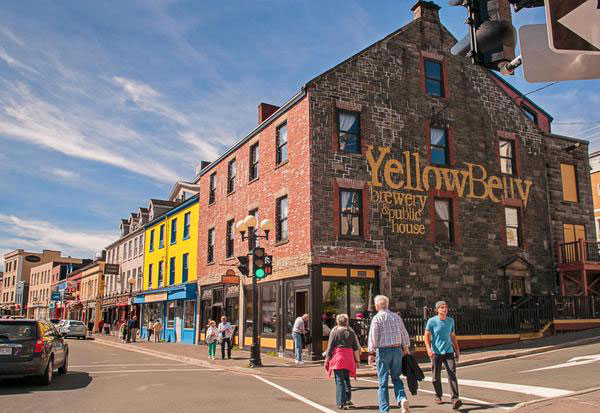
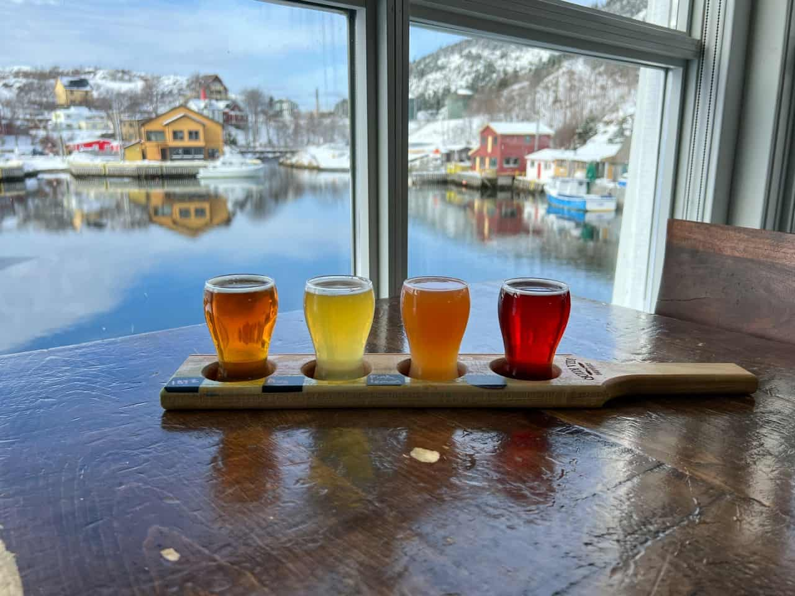
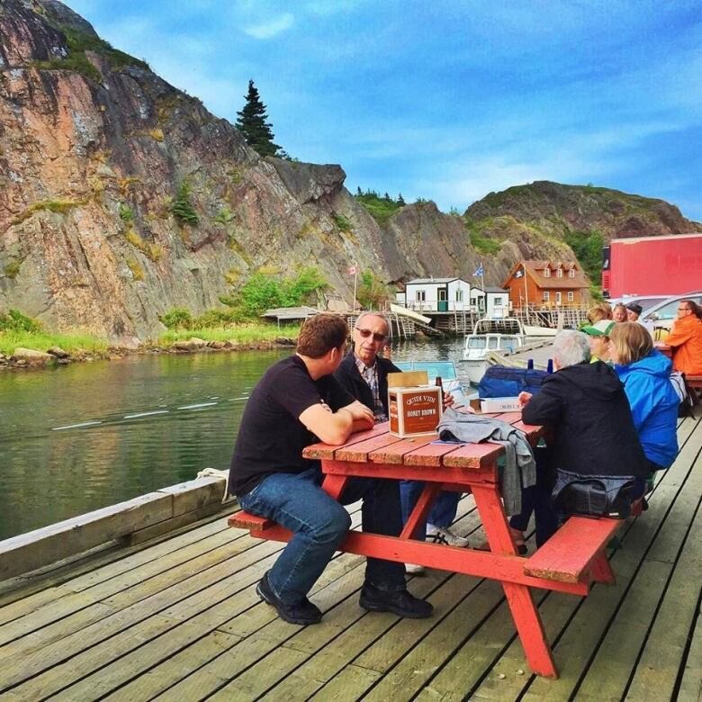

Avalon Adventures invites you to experience the thriving craft beer scene on the Avalon Peninsula of Newfoundland and Labrador with our exclusive group adult package.
Join us on a guided tour of the region's best breweries and discover the art and science of craft brewing. Our expert guides will take you behind the scenes of each brewery, where you'll learn about the brewing process, the history of craft brewing on the Avalon Peninsula, and the stories behind each beer.



Our tour includes visits to some of the most renowned breweries in the area, including:
1. Yellowbelly Brewery
2. Quidi Vidi Brewing Company
3. Landwash Brewery
4. Bannerman Brewing Co.
5. Ninepenny Brewing
6. Dildo Brewing Co.
7. Baccalieu Trail Brewing Company
8. Bay de Verde Brewing Company
At each brewery, you'll have the opportunity to taste a variety of beers and ales, including seasonal and limited edition brews. Meet the brewers and chat with fellow beer enthusiasts as you sample unique flavors and learn about the brewing process.
As part of this package, we provide transportation to and from each brewery, light refreshments, and a knowledgeable guide to enhance your experience. Our tours are perfect for groups of friends, couples, and solo travelers looking to experience the best of Newfoundland and Labrador's craft beer scene.
Come discover the vibrant and growing craft beer culture on the Avalon Peninsula with Avalon Adventures.